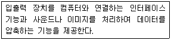
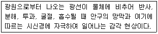
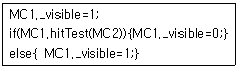

멀티미디어콘텐츠제작전문가(구) (2005-03-06 기출문제)
1과목: 멀티미디어개론
1. “( ① )란 텍스트를 읽는 도중 연관된 자료를 즉시 볼 수 있는 비선형 구조로 이루어져 있으며, 웹서비스는 이러한 개념을 사용하여 인터넷에 분산되어 있는 정보로 쉽게 이동할 수 있도록 길을 만들어 주어야 하는데, 이를 ( ② )라 한다.” 다음 중 ( ) 안의 적절한 용어를 순서대로 나열한 것은?
- ① 하이퍼링크 ② 하이퍼텍스트
- ① 하이퍼텍스트 ② 하이퍼링크
- ① 하이퍼카드 ② 하이퍼링크
- ① 하이퍼링크 ② 하이퍼미디어
(정답률: 알수없음)

2. 다음 중 멀티미디어 특징으로 거리가 먼 것은?
- 쌍방향성(Interactive)
- 선형성(Linear)
- 통합성(Integration)
- 디지털화(Digitalization)
(정답률: 알수없음)
3. 다음 중 하이퍼미디어에 대한 설명으로 틀린 것은?
- 하이퍼미디어 시스템에서 정보를 저장하는 가장 기본단위는 포인터이다.
- 하이퍼텍스트를 기반으로 텍스트, 이미지, 그래픽과 같은 정적인 정보와 사운드, 비디오 및 애니메이션과 같은 동적인 정보도 포함하는 대규모의 데이터베이스로 다양한 미디어들을 연결할 수 있다.
- 정보검색 시 미리 준비된 가장 좋은 정보검색 경로를 사용자에게 제공하고 정보탐색 중 특정부분을 기억하여 추후의 접근에 편의를 제공한다.
- 한 화면상에서 멀티윈도우를 이용하여, 여러 작업을 한꺼번에 수행할 수 있다.
(정답률: 알수없음)
4. “IPv6(Internet Protocol ver.6)은 ( ) 비트 주소를 갖는다.” ( )안에 들어갈 숫자는?
- 32
- 64
- 128
- 256
(정답률: 알수없음)
5. OSI 모델은 7개의 계층으로 구성되어 있다. 다음 중 제3계층에 해당하는 것은?
- 데이터링크(Data Link)
- 네트워크(network)
- 세션(Session)
- 프레젠테이션(presentation)
(정답률: 알수없음)
6. 다음 중 비디오 데이터를 MPEG-II로 압축하는데 이용되는 기술과 관련이 먼 것은?
- 화면간의 유사성을 이용하여 시간적 중복성을 제거한다.
- 화면내의 상관성을 이용하여 공간적 중복성을 제거한다.
- 영상에 담긴 객체들을 기반으로 부호화한다.
- 데이터의 발생 빈도에 따라 엔트로피 부호화한다.
(정답률: 알수없음)
7. 인터넷과 관련된 통신 프로토콜 중에서 잘못 연결된 것은?
- PPP : 파일 전송 프로토콜
- HTTP : 웹 문서를 송수신하기 위한 프로토콜
- SMTP : 전자우편 서비스를 위한 프로토콜
- TCP/IP : 인터넷 환경에서 정보의 전송과 제어를 위한 프로토콜
(정답률: 알수없음)
8. IP 주소 4.5.6.7은 어느 클래스에 속하는가?
- 클래스 A
- 클래스 B
- 클래스 C
- 클래스 D
(정답률: 알수없음)
9. 다음 중 픽셀(Pixel)에 대한 설명으로 잘못된 것은?
- Picture Element의 합성어로 화면을 구성하는 기본 단위이다.
- 컴퓨터 모니터 화면에 나타나는 각각의 점을 뜻하기도 한다.
- 픽셀 단위로 저장되는 이미지를 비트맵방식이라 한다.
- 픽셀에 할당된 비트수와 이미지의 컬러와는 상관이 없다.
(정답률: 알수없음)
10. 사운드(Sound)를 구성하는 기본 요소와 관련이 없는 것은?
- 주파수(Frequency)
- 효과(Effect)
- 진폭(Amplitude)
- 음색(Tone Color)
(정답률: 알수없음)
11. Web casting 기술은 네트워크를 기반으로 멀티미디어서비스를 다양하게 제공하고 있다. 사용자가 선택한 데이터를 일정시간마다 클라이언트에게 자동적으로 배달하는 형태의 데이터 전달방식을 무엇이라 하는가?
- PUSH
- PULL
- STREAMING
- REMOTE
(정답률: 알수없음)
12. 3차원 그래픽스의 생성과정 중 모델링에 관한 설명으로 거리가 가장 먼 것은?
- 3차원 스캔에 의한 모델링은 현재 기술적으로 실현 불가능하다.
- 와이어프레임모델은 물체의 골격을 표현한 모델이다.
- 모델링이란 3차원 좌표계를 사용하여 컴퓨터로 물체의 모양을 표현하는 과정을 말한다.
- 다각형 표현 모델은 다각형 면을 이용하여 3차원 모델을 표현한다.
(정답률: 알수없음)
13. 다음 중 비트맵 이미지에 대한 설명으로 옳은 것은?
- 연속되는 픽셀들 단위로 이미지를 표현하기 때문에 점차적인 색변화를 나타내는 효과에 유용하다.
- 색의 수가 많을수록 그림 내에서의 색변이가 부자연스러워지며 픽셀 간 경계도 쉽게 구분된다.
- 그림을 확대 및 축소 시에도 아무런 화질 변화 없이 잘 나타난다.
- 미세한 그림이라든지 점진적인 색변이를 나타내는데 만족스럽지 못하다.
(정답률: 알수없음)
14. 다음 중 동영상 파일 포맷의 확장자에 대한 설명으로 부적절한 것은?
- MPEG :Moving Picture Experts Group의 약자로 동영상에 대한 효율적인 전송 압축 알고리즘과 코드체계의 국제 표준 규격을 연구하기 위해 만들어졌다.
- AVI :마이크로소프트 윈도우를 위한 비디오 지원 API인 비디오 포 윈도우(Video for Windows : VFW)의 기본 파일포맷 확장자이다.
- ASF : Apple사에서 개발한 통합 멀티미디어 지원 툴킷인 퀵타임(Quick-Time)에서 지원하는 동영상 파일 포맷의 확장자이다.
- RM : 리얼플레이어용의 미디어 파일의 확장자로 Real Producer를 써서 만들어 낼 수 있다.
(정답률: 알수없음)
15. 다음 중 이미지를 나타내는 컬러 모델(Color Model)이 아닌 것은?
- HBS(Hue, Blue, Subtraction) 모델
- RGB(Red, Green, Blue) 모델
- CMY(Cyan, Magenta, Yellow) 모델
- HSV(Hue, Saturation, Value) 모델
(정답률: 알수없음)
16. 다음 글자 폰트의 구현 방식 중에서 점과 점을 연결하는 선분과 곡선으로 문자를 생성하여 글자를 확대해도 매끄럽게 처리할 수 있는 것은?
- 비트 맵(Bit Map)
- 벡터 폰트(Vector Font)
- 래스터 폰트(Raster Font)
- 아우트라인(Out Line)
(정답률: 알수없음)
17. 애니메이션 특수효과 중 2개의 서로 다른 이미지나 3차원 모델 사이에 점진적으로 변화해 가는 모습을 보여주는 것을 무엇이라 하는가?
- 미립자 시스템(Particle System)
- 로토스코핑(Rotoscoping)
- 모핑(Morphing)
- 양파껍질 효과(Onion-Skinning)
(정답률: 알수없음)
18. 다음 중 절차적 애니메이션과 관계가 없는 것은?
- 유동표면(Flexible Surface)
- 미립자 시스템(Particle System)
- 역운동학(Inverse Kinematics)
- 집합 애니메이션(Flock Animation)
(정답률: 알수없음)
19. 다음 중 비디오 데이터의 압축·복원과 관련이 깊은 것은?
- 모뎀(MODEM)
- 코덱(CODEC)
- 모핑(Morphing)
- 멀티플렉서(Multiplexor)
(정답률: 알수없음)
20. 미디어의 유형별 분류를 고려하여 본다면 다음 중 전송 매체(Transmission medium)에 속하는 것은 어느 것인가?
- 디지털 카메라
- 동축케이블
- 스캐너
- 플로터
(정답률: 알수없음)
21. 다음은 디지털 오디오 데이터의 압축 방식을 나열하였다. 이 중 CCITT라는 국제기구에서 통신을 목적으로 제정한 압축방식으로 ISDN 전화방식에 주로 사용되는 것은 어느 것 인가?
- ADPCM
- Mu-law
- MPEG 표준
- RealAudio
(정답률: 알수없음)
22. 용어의 연결이 바르게 짝지어지지 않은 것은?
- DVD - Digital Video Disk
- DVI - Digital Video Interactive
- VCS - Video Conference System
- VOD - Video On Disk
(정답률: 알수없음)
23. 32배속 CD-ROM의 데이터 전송속도는?
- 150Kbps
- 600Kbps
- 1.2Mbps
- 4.8Mbps
(정답률: 알수없음)
24. 다음 설명은 하드웨어 중 무슨 장치를 말하는 것인가?

- 본체
- 미디어 처리 장치
- 기억 장치
- 응용 소프트웨어
(정답률: 알수없음)
25. 다음 중 모니터에 대한 설명으로 잘못 된 것은?
- 1초 동안에 CRT 좌측에서 우측까지 전자빔이 주사되는 횟수를 수평 주파수라고 한다.
- 모니터는 Red, Green, Blue의 3색 형광물질을 방사하는 감법혼합을 이용한다.
- 상단에서 하단까지 주사가 모두 끝났을 때, 하단의 주사선을 다시 상단으로 옮기는 횟수를 수직 주파수라고 한다.
- 화소의 크기가 작을수록, 화소내의 형광 입자 간의 거리가 가까울수록 해상도는 높아진다.
(정답률: 알수없음)
2과목: 멀티미디어기획및디자인
26. User의 편의를 위한 GUI(Graphic User Interface) 디자인의 원칙으로 볼 수 없는 것은?
- 일관성
- 경제성
- 조직성
- 다양성
(정답률: 알수없음)
27. 인터페이스 디자인을 위한 조형 원리에 포함되지 않는 것은?
- 절제
- 강조
- 통일감과 조화
- 균형
(정답률: 알수없음)
28. 디자인의 조건과 거리가 먼 것은?
- 작품성
- 심미성
- 합목적성
- 독창성
(정답률: 알수없음)
29. 다음 중 명도에 대한 설명과 거리가 먼 것은?
- 명도대비의 결과는 한마디로 흰색, 회색, 검정색의 조화라고 볼 수 있다.
- 우리의 감각은 색상, 명도, 채도 대비 중 명도대비에 가장 민감하다.
- 명도대비는 밝은 색은 더 밝게 어두운 색은 더 어둡게 보이는 현상이다.
- 명도 단계는 흰색부터 검정까지 총 3단계이다.
(정답률: 알수없음)
30. 물체의 원근감이나 중량감, 실제감을 강하게 느끼게 하는 표현 요소는?
- 명암
- 선
- 면
- 점
(정답률: 알수없음)
31. 다음 중 디자인의 요소가 아닌 것은?
- 형태, 텍스튜어
- 선, 크기
- 성질, 비례
- 점, 명암
(정답률: 알수없음)
32. 단조로움과 규칙적임에서 벗어나 사용자의 관심과 시선을 집중시키고자 할 때 사용하는 가장 효과적인 미적형식원리는?
- 반복
- 강조
- 점이
- 통일
(정답률: 알수없음)
33. 다음 중 편집 디자인에 대한 설명으로 틀린 것은?
- 미국에서는 퍼블리케이션 디자인(Publication Design)이라고 한다.
- 전달하고자 하는 내용을 지면이나 천에 알아 볼 수 있도록 표현하는 선전 도구와 광고 매체이다.
- 잡지, 신문, 책 그리고 책자 형식의 소형 인쇄물을 시각적으로 구성하는 그래픽 디자인의 한 분야이다.
- 대중 잡지 편집 디자인은 1930년에 포춘(Fortune)지에서 실시한 시각 개념과 편집 디자인의 통합으로 시작되었다.
(정답률: 알수없음)
34. 이야기가 순서대로 전개되지 않는 방식으로 추리극이나 싸이코 드라마에 주로 사용되는 시나리오의 구성 형식은?
- 직선식 구성
- 나열식 구성
- 선형 구성
- 결승식 구성
(정답률: 알수없음)
35. 아이디어 스케치 중 러프 스케치(Rough Sketch)에 해당하는 설명은?
- 선에 의한 표현 및 간단한 재질 표현을 병행함으로써 효과적인 입체표현을 한다.
- 아이디어 발상 초기 단계의 스케치를 말한다.
- 정확도는 요구되지 않으며 표시로도 가장 불안전하다.
- 가장 정밀한 스케치이다.
(정답률: 알수없음)
36. 문자가 4차원 공간속에서 시간과 소리와 결합하여 복합적인 형태로 표현되는 것을 무엇이라고 하는가?
- 모션 타이포그래피
- 캐릭터(Character) 애니메이션
- 실사 애니메이션
- 칼리그래피
(정답률: 알수없음)
37. 멀티미디어 디자인에서 사용자의 주의를 집중시키기 위해 주로 사용하는 방법이 아닌 것은?
- 플래시를 통한 움직임 사용
- 다른 색상이나 소리 첨가
- 애니메이션 사용
- 일관성 유지를 위해 동일한 크기의 폰트 사용
(정답률: 알수없음)
38. 움직이는 영상물과 관계있는 게슈탈트 법칙은 무엇인가?
- 근접성의 법칙
- 폐쇄성의 법칙
- 연속성의 법칙
- 유사성의 법칙
(정답률: 알수없음)
39. 다음 중 효과적인 인터렉션(interaction)디자인을 위한 조건이 아닌 것은?
- 사용자의 참여를 적극 유도하여야 한다.
- 철저하고 치밀한 연출이 필요하다.
- 개발자 중심의 인터페이스디자인이 필요하다.
- 대화구조를 강화하고 도전의식을 도취시킨다.
(정답률: 알수없음)
40. 인터렉션(Interaction)의 설명 중 올바른 것은?
- 사용자들은 인터렉션 추가로 컴퓨터 앞에서 수동적 입장으로 바뀐다.
- 인터페이스에 대한 전반적 사항을 포함하여 사용자가 단순히 정보를 찾아보는 것에서 그친다.
- 인터렉션 디자인은 많은 정보전략을 위해 메뉴를 최대한 세분화 해준다.
- 컴퓨터와 사용자간의 대화, 상호작용을 의미한다.
(정답률: 알수없음)
41. 멀티미디어를 구성하는 요소가 아닌 것은?
- 효과
- 텍스트
- 사운드
- 비디오
(정답률: 알수없음)
42. 다음 중 감산혼합의 특징과 거리가 먼 것은?
- 삼원색은 RGB이다.
- 보색끼리 혼합하면 검정색에 가까워진다.
- 혼합하면 할수록 명도, 채도가 낮아진다.
- 염료의 혼합, 물감의 혼색 등을 말한다.
(정답률: 알수없음)
43. 다음 중 레이아웃을 잘 구성하기 위한 방법으로 거리가 먼 것은?
- 정보를 그룹으로 분리하는 규칙을 사용한다.
- 다른 크기의 활자를 사용한다.
- 활자의 굵기를 모두 동일하게 한다.
- 중요한 정보에는 색을 사용한다.
(정답률: 알수없음)
44. 다음 중 기업의 이윤추구를 위한 디자인 마케팅의 4가지 기본 요소에 포함되지 않는 것은?
- 제품
- 유통
- 문화
- 가격
(정답률: 알수없음)
45. 다음 중 인터넷 마케팅의 4C에 해당되지 않는 것은?
- 상거래(Commerce)
- 공동체(Community)
- 고객(Customer)
- 커뮤니케이션(Communication)
(정답률: 알수없음)
46. 황금분할에 대한 설명으로 옳지 않은 것은?
- 그리스 시대부터 미적 비례의 전형으로 사용되어 왔다.
- 신의 비례라고도 한다.
- 묘듈러의 개념이라고도 한다.
- 가로 세로의 비율이 1:1.618일 때를 말한다.
(정답률: 알수없음)
47. 스토리보드 작성 시 참고 사항으로 틀린 것은?
- 관련된 문서간의 연결에 신중을 기해야 한다.
- 각 문서마다 주제 및 내용은 상세하게 세부적으로 기록해야 한다.
- 사용 될 그림의 크기는 전송 속도를 고려하여 선택해야 한다.
- 웹 페이지 내의 관련 홈페이지와도 구성의 조화를 고려해야 한다.
(정답률: 알수없음)
48. 타이포그라피(Typography)의 조건 중 적합하지 않는 것은?
- 글자 Spacing
- 여백과의 독립
- Display Type
- 정보량의 가독성
(정답률: 알수없음)
49. 다음 중 그 제작방식이 전혀 다른 애니메이션 작품은?
- 토이 스토리
- 벅스 라이프
- 몬스터 주식회사
- 월레스 & 그로밋
(정답률: 알수없음)
50. 다음 설명은 디자인 요소 중 무엇에 관한 설명인가?

- 빛
- 형태
- 색채
- 질감
(정답률: 알수없음)
3과목: 멀티미디어저작
51. 인터넷 사용자들 간에 새로운 뉴스의 분배, 조회 및 송수신이 가능한 환경을 제공하는 세계적인 데이터 교환 시스템으로 TIN 프로그램 등을 사용하여 쉽게 Usenet 환경으로 들어갈 수 있도록 하는 프로토콜은?
- HTTP(hyper text transfer protocol)
- NNTP(Network news transfer protocol)
- POP(Post office protocol)
- Telnet(Telecommunications network)
(정답률: 알수없음)
52. 웹에서 사용되는 하이퍼텍스트를 기술하는 언어의 종류인 HTML의 내용과 거리가 가장 먼 것은?
- 다양한 플랫폼 지원과 확장성이 뛰어남
- 문서 형식을 기술하는 마크업(Markup) 언어
- 'HyperText Markup Language'의 약자
- 하나의 문서를 검색하고 있는 사용자는 다른 문서로 링크되어 있는 항목을 선택하여 다른 문서로 이동할 수 있다.
(정답률: 알수없음)
53. 다음 중 정지 영상의 국제 표준 압축 방식은?
- MPEG
- WAV
- JPEG
- MIDI
(정답률: 알수없음)
54. 다음 중 Visual C＋＋ 의 특징이 아닌 것은?
- 편리한 통합 환경을 제공한다.
- 객체지향 설계 도구가 포함되어 있다.
- MFC라는 강력한 클래스 라이브러리를 지원한다.
- 프로그램의 디버깅이나 커다란 프로그램의 프로젝트관리 면에서 취약하다.
(정답률: 알수없음)
55. Asymetrix사에서 개발한 제품으로 객체지향적 제작환경을 제공하는 가장 대표적인 멀티미디어 저작도구는?
- 디렉터(Director)
- 툴북(ToolBook)
- 플래쉬(Flash)
- 자바(Java)
(정답률: 알수없음)
56. 플래시 무비를 제작하였다. 이 무비를 재생할 때 사용자가 임의의 크기로 조정을 하였을 경우 무비의 내용이 제대로 전달되지 않는다. 이를 방지하고자 하는데 다음 중 가장 올바른 방법은?
- 프레임 액션에 fscommand("fullscreen",true)를 코딩한다.
- 프레임 액션에 fscommand("allowscale",true)를 코딩한다.
- 프레임 액션에 fscommand("fullscreen",false)를 코딩한다.
- 프레임 액션에 fscommand("allowscale",false)를 코딩한다.
(정답률: 알수없음)
57. 웹 페이지를 구축 할 때 가장 먼저 해야 할 과정은?
- 아이디어 도출
- 주제와 대상의 결정
- 내용의 구성
- 웹페이지 작성 준비
(정답률: 알수없음)
58. 플래시 액션스크립트에 관한 설명이다. 가장 바르게 설명한 것은?
- hitTest() : 키보드의 키 값 입력을 감지한다.
- attachMovie() : 심벌로부터 무비클립 인스턴스를 복제하여 다른 인스턴스를 생성한다.
- duplicateMovieClip() : 라이브러리 내의 인스턴스를 생성하여 배치한다.
- Data : loadMovie나 loadVariable 액션을 통해 data을 받을 때 실행된다.
(정답률: 알수없음)
59. 다음 중 객체 지향 기법의 장점이 아닌 것은?
- 프로그램 개발 시 재사용성이 증가한다.
- 프로그램 개발 시간이 짧아진다.
- 현실 세계를 이해하는 모델링 방식을 제공한다.
- 소프트웨어의 유연성이 증가된다.
(정답률: 알수없음)
60. 컴퓨터에 의해서 만들어진 사람형상을 한 모델의 한 종류로 가상환경 내의 참여자를 의미하며, 가상환경에서 사용자를 대신해서 활동하는 개체로 '분신'을 의미하는 것은?
- 아바타
- 사이버스페이스
- 채팅
- 오브젝트
(정답률: 알수없음)
61. 링고 명령문을 작성하는 과정을 설명한 것 중 맞는 것은?
- 도트 구문은 영어와 유사하다.
- 서술형 구문, 도트 구문, 독립 구문의 세 가지 구문 유형 중에서 선택할 수 있다.
- 도트 구문 표현은 구두점이 뒤따르는 객체의 이름으로 시작한다.
- 서술형 구문은 초보자도 긴 스크립트를 이해할 수 있도록 해주는 간결한 형식이다.
(정답률: 알수없음)
62. 매크로미디어 사에서 개발한 디렉터의 스크립트 언어는?
- 링고
- 캐스트
- 아트웨어
- 하이퍼토크
(정답률: 알수없음)
63. 디렉터 혹은 오쏘웨어에서 제작한 저작물이 인터넷에서 재생할 수 있도록 하는 기술은?
- 퍼블리시(Publish)
- 쇽웨이브(Shockwave)
- 프리미어(Adobe Premier)
- 하이퍼텍스트(HyperText)
(정답률: 알수없음)
64. 다음 중 리눅스(Linux) 기반의 스크립트 언어는?
- Perl
- Cobol
- Basic
- Pascal
(정답률: 알수없음)
65. 멀티미디어 저작도구 차원에서 제공하는 내부적인 스크립트 언어가 아닌 것은?
- HyperTalk
- SuperTalk
- OpenScript
- HyperText
(정답률: 알수없음)
66. 자바스크립트 Window 객체에서 둘 중에 하나를 선택하는 대화상자를 생성할 때 사용하는 메서드(method)는?
- alert()
- confirm()
- open()
- prompt()
(정답률: 알수없음)
67. 다음 중 자바스크립트 변수로 사용 할 수 있는 것은?
- transient
- super
- inter
- try
(정답률: 알수없음)
68. 자바스크립트의 브라우저(Browser) 내장 객체로 객체의 계층 구조에서 최상위에 있는 객체는?
- Window 객체
- Document 객체
- History 객체
- Location 객체
(정답률: 알수없음)
69. 웹 브라우저가 합체하는 방식으로 동적 결합이 가능한 것은?
- Plug-in
- Helper Application
- Viewer
- VDOLive
(정답률: 알수없음)
70. HTML을 이용한 웹 페이지에서 사용자로부터 정보를 입력받기 위한 ＜input＞ 태그 사용 시 모양이나 성격을 지정하는 속성 type의 값으로 설정할 수 없는 것은?
- radio
- password
- reset
- area
(정답률: 알수없음)
71. HTML 문서에서 글자 모양 효과를 이탤릭체(기울임체)로 나타내기 위해 사용하는 태그(Tag)는?
- ＜B＞글자모양＜/B＞
- ＜I＞글자모양＜/I＞
- ＜SUB＞글자모양＜/SUB＞
- ＜BLINK＞글자모양＜/BLINK＞
(정답률: 알수없음)
72. HTML문서에서 이미지 파일의 삽입을 위해 사용하는 태그(Tag)인 ＜IMG＞에서 이미지 파일명을 입력하면 현재 디렉토리(Directory) 기준으로 찾아가는 옵션(Option)은?
- BORDER
- ALIGN
- SRC
- ALT
(정답률: 알수없음)
73. HTML 태그에서 cell spacing에 대한 설명 중 바른 것은?
- 셀 가장자리와 셀 내용 사이의 여백을 지정한다.
- 두 셀 사이의 여백 크기를 지정한다.
- 표에는 거의 사용되지 않는다.
- 일반적으로 초기값 0이 할당된다.
(정답률: 알수없음)
74. 사용자가 작성한 HTML문서에 있는 태그와 특수 기호까지 웹 브라우저 화면에 그대로 보여 주게 하는 태그는?
- ＜pre＞
- ＜xmp＞
- ＜sup＞
- ＜dfn＞
(정답률: 알수없음)
75. 플래시에서 무비클립의 충돌감지 액션을 다음과 같이 코딩했다. 실행결과에 대해 바르게 설명한 것은?

- MC1이 MC2에 가서 충돌하면 MC1이 사라진다.
- MC2가 MC1에 가서 충돌하면 MC1이 사라진다.
- MC1이 MC2에 가서 충돌하면 MC2가 사라진다.
- MC2가 MC1에 가서 충돌하면 MC2가 사라진다.
(정답률: 알수없음)
4과목: 멀티미디어제작기술
76. 다음 중 벡터 방식의 파일 포맷은?
- BMP
- EPS
- GIF
- JPEG
(정답률: 알수없음)
77. 다음 중 주파수와 관련된 설명 중 잘못된 것은?
- 주파수는 음의 높낮이와 관련 있다.
- 주파수가 크면 고음이고 작으면 저음이다.
- 주파수는 사운드 파형의 반복 횟수이다.
- 측정 단위로는 초당 진동횟수인 Octave가 사용된다.
(정답률: 알수없음)
78. 다음 중 사람이 들을 수 있는 가청주파수가 아닌 것은?
- 10Hz
- 30Hz
- 70Hz
- 100Hz
(정답률: 알수없음)
79. 다음 디지털 사운드 압축방식 중 사람과 사람이 대화할 때 단어 사이의 공백은 디지털 데이터로 전송할 필요가 없다는 것을 활용하여 음성의 실시간 전송을 위해 만들어진 방식은 무엇인가?
- A-Law
- MP3
- ADPCM
- TrueSpeech
(정답률: 알수없음)
80. 디지털영상에서 발생하는 Jag를 바르게 설명한 것은?
- 계단형 화질왜곡현상
- 복사에 의한 화질의 열화
- 압축에 의한 정보량 축소
- 잡음(noise)에 대한 강한 면역성
(정답률: 알수없음)
81. “MIDI 시퀀서와 미디 장비간의 송/수신은 ( )을(를) 통해 이루어지고, 하나의 ( )은(는) 시퀀서와 미디 장비 안에서 다시 16개의 채널이라는 경로로 나누어진다.” 다음 중 ( )안에 들어갈 알맞은 용어는?
- 포트(port)
- 패치(patch)
- 트랙(track)
- 라인(line)
(정답률: 알수없음)
82. 다음 중 7.1 채널을 채용한 대표적인 서라운드 사운드는?
- DSD(Dolby Surround Digital)
- DTS(Digital Theater System)
- Qsound
- SDDS(Sonny Dynamic Digital Sound)
(정답률: 알수없음)
83. 종이나 헝겊, 또는 나무 등으로 만든 그림을 잘라내어 배경 위에 겹쳐 놓고 촬영하는 애니메이션 기법은?
- 셀 애니메이션
- 절지 애니메이션
- 페이퍼 애니메이션
- 스톱 모션 애니메이션
(정답률: 알수없음)
84. SMIL(Synchronized Multimedia Integration Language)의 특징이 아닌 것은?
- 스트리밍속도의 향상
- 고품질의 멀티미디어 프리젠테이션제작기능
- 멀티미디어 통합 및 동기화
- 오디오, 비디오, 텍스트, 이미지, swf등의 멀티미디어 데이터제어
(정답률: 알수없음)
85. 다음 중 디지털 카메라 촬영에서 “비네팅(Vignetting)현상”에 대해서 올바르게 설명한 것은?
- 촬영 이미지의 네모서리 부분이 둥그런 모양으로 어둡게 되는 현상이다.
- 화이트밸런스가 제대로 맞지 않아 화면이 하얗게 번지는 현상이다.
- 외부 플래시 사용에서 카메라와의 동기가 맞지 않아 어둡게 나오는 현상이다.
- 편광필터 사용 시 잘못 사용하여 화면에 사선으로 줄이가는 현상이다.
(정답률: 알수없음)
86. 비 선형편집(Non-linear Editing)을 바르게 설명 한 것은?
- 일반적인 테잎 편집을 의미
- 복사 횟수에 따라 화질의 열화가 진행
- 영상신호를 데이터로 저장하므로 삽입, 삭제, 수정이 용이
- 원본 테잎의 내용을 마스터 테잎에 순차적으로 복사하면서 진행하는 편집방식
(정답률: 알수없음)
87. GIF 형식의 파일에서 사용 가능한 최대 색상 수는?
- 24
- 28
- 216
- 232
(정답률: 알수없음)
88. 비디오 압축 기술에 있어 적절한 압축방법이 아닌 것은?
- 프레임 수(fps)의 축소
- GIF파일 포맷으로 축소
- 프레임 크기(Number of Pixels)의 축소
- 픽셀 당 컬러 비트 수(Color Bit Depth)의 축소
(정답률: 알수없음)
89. 아날로그 음을 디지털화하는 과정에서 미소한 화이트 노이즈(white noise) 성분을 인위적으로 집어넣는 것을 무엇이라고 하는가?
- 지터(Jitter)
- 디더링(Dithering)
- 샘플링(Sampling)
- 에어리어징(Aliasing)
(정답률: 알수없음)
90. GIF(Graphic Interchange Format)에 대한 설명 중 틀린 것은?
- Illustrator로 제작된 그래픽 파일의 경우 압축효과가 크다.
- 압축방식은 LZW(Lempel-Ziv-Welch) 알고리즘을 사용한다.
- 색상정보는 그대로 두고 압축을 하기 때문에 사진압축에 가장 유리한 방법이다.
- 미국 Compuserve사에서 자체 개발 서비스를 통해 이미지를 전송할 목적으로 개발되었다.
(정답률: 알수없음)
91. 다음 중 렌더링(Rendering)기법에 속하지 않는 것은?
- Z 버퍼 기법
- 모핑(Morphing)기법
- 텍스쳐 매핑(Texture Mapping)기법
- 레이트레이싱(Ray Tracing) 기법
(정답률: 알수없음)
92. Key Frame만을 제작하고 키프레임 사이의 움직임은 컴퓨터 연산에 의해 자동 설정되는 애니메이션의 제작기능은?
- 패스(Path)
- 트위닝(tweening)
- 그라비티(Gravity)
- 키네마틱스(Kinematics)
(정답률: 알수없음)
93. 비디오를 압축할 때 고려사항이 아닌 것은?
- 초당 필요 frame 수
- 압축률에 따른 화질의 변화
- 압축 및 복원 속도
- 통신채널 종류
(정답률: 알수없음)
94. 다음 중 동영상에서 음악이 표현할 수 있는 것이 아닌 것은?
- 등장인물의 연기력이 부족한 경우, 이를 대체할 수 있다.
- 스토리의 전체적 분위기를 나타낼 수 있다.
- 스토리의 시간적 공간적 배경을 나타낼 수 있다.
- 장면에 나타나는 감정표현을 부각시킬 수 있다.
(정답률: 알수없음)
95. 인간의 움직임을 만들어 내는 가장 자연스런 방법으로 사실적인 움직임을 3D애니메이션의 모델에 적용할 수 있는 기법을 무엇이라 하는가?
- 모션컨트롤
- 모션캡쳐
- 애니메트로닉스
- 몰핑
(정답률: 알수없음)
96. 다음 중 음의 크기와 관련 깊은 것은 무엇인가?
- 진폭
- 주파수
- 음색
- 사이클
(정답률: 알수없음)
97. MP3 파일에 대한 CD에 기록된 음악데이터의 압축비율은?
- 1 : 2
- 1 : 5
- 1 : 8
- 1 : 11
(정답률: 알수없음)
98. 남자 성우의 목소리를 녹음하여 매우 낮은 저음의 괴물 목소리로 효과 처리하려고 한다. 다음 중 가장 효과적인 시그널 프로세서는?
- 유니트(Unit)
- 프레서(pressor)
- 이퀄라이저(Equalizer)
- 피치 쉬프터(Pitch Shifter)
(정답률: 알수없음)
99. 영상을 구성하는 가장 기본적인 단위는?
- 씬(scene)
- 씨퀀스(sequence)
- 컷(cut)
- 와이프(wipe)
(정답률: 알수없음)
100. 다음 중 하드웨어 장비에 대한 설명으로 틀린 것은?
- 신디사이저는 소리를 발생시키는 음원부와 음원부를 이용하여 연주하는 건반부로 이루어져 있다.
- 믹서는 시퀀서 프로그램이 실행되는 컴퓨터와 미디 모듈 간을 연결해 주는 장치이다.
- 신디사이저는 전기적인 신호를 합성하여 음을 생성하는 장치이다.
- 샘플러는 악기의 모든 음을 가지고 있고, 실제의 소리를 디지털 방식으로 직접 녹음하여 편집할 수 있다.
(정답률: 알수없음)